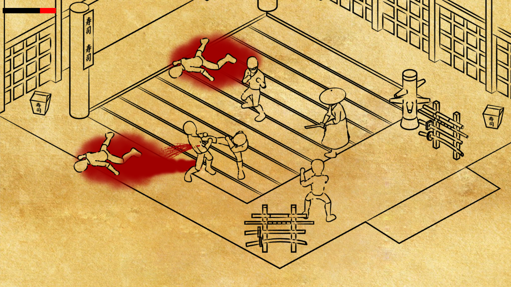
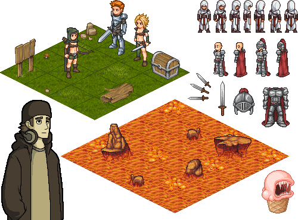

CHIP-8 - Emulator
My first foray into game emulation programming. Written in C / SDL. Runs Pong, Space Invaders, Tetris... Source available on Github


Game Developer / Code Monkey
Download CV (pdf)Several game related projects developed between 2010 and 2017. Tools: Blender, Unreal, Unity, GameMaker, and C/SDL/GL.
Worked as a technical artist on Shodō. I designed and implemented the visual 'paper' art style, sprites, and blood effects.
Developed a bidirectional path tracer in C++. Supports spheres and triangles meshes. More features can be seen in the demo reel above.
My first foray into game emulation programming. Written in C / SDL. Runs Pong, Space Invaders, Tetris... Source available on Github
Virtual-reality software for chronic stroke rehabilitation, using mirror therapy techniques. The patients view can bee seen here.
Web app for the Otago Department of Anatomy, for learning anatomical features on specimens that are too delicate to touch. Hosted here
A video recording, editing and sharing platform. Developed during my internship at mixbit. Until recently the app was available on iTunes.

The Loopie team at mixbit, posing like Matt Damon in The Martian.
Jan-Dawid Roodt (lead), Emerson Wood, Tom Hall, & myself.
Our team qualified for the ACM ICPC Regional Finals in Sydney.
Myself, Phillip Hodder, Simon Finnie, & David Eyers (coach).

Custom built split ergonomic mechanical keyboard. More info here.
Prevents wrist strain, and has improved my typing speed.
Prior to becoming a developer, I worked as a pixel artist on several game projects.

//TODO update this from a spinning animation, to a small game.
Click and drag to rotate.
{kind=link}
{kind=link}